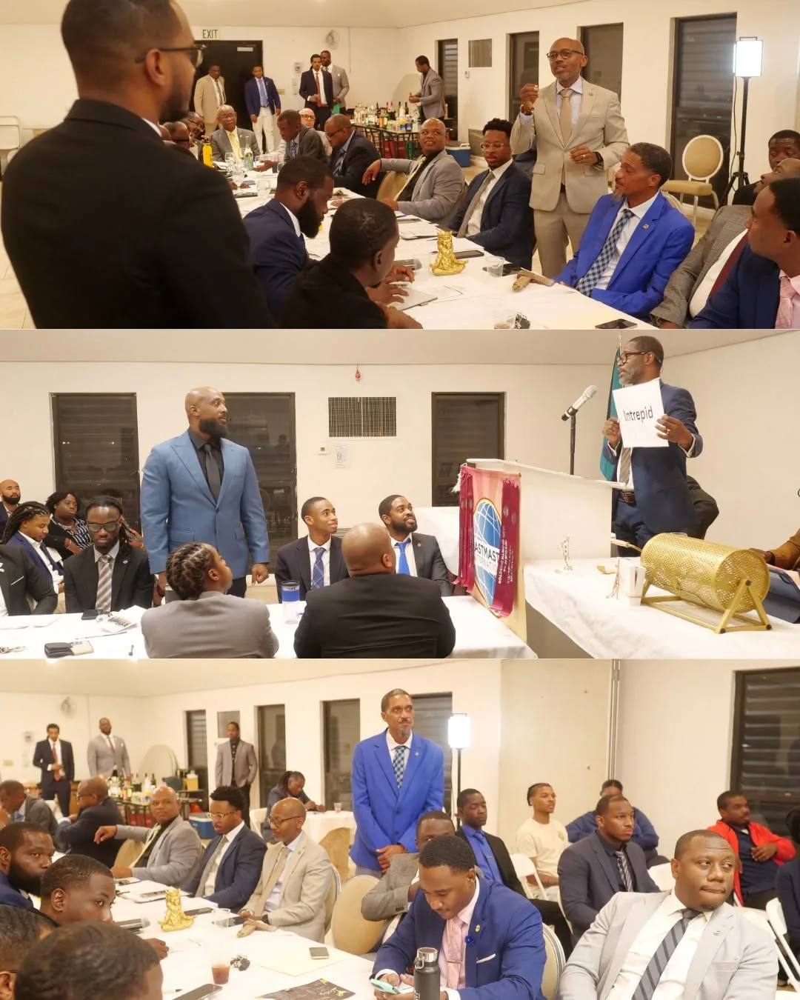
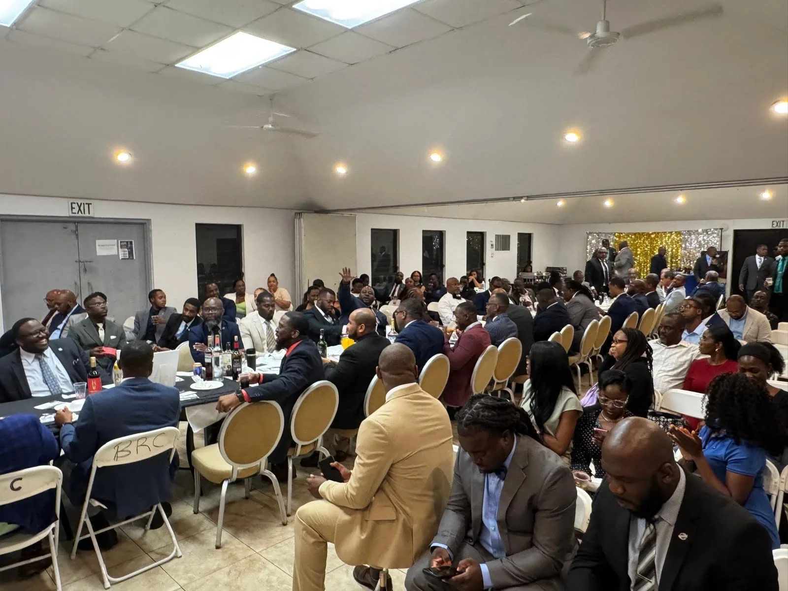
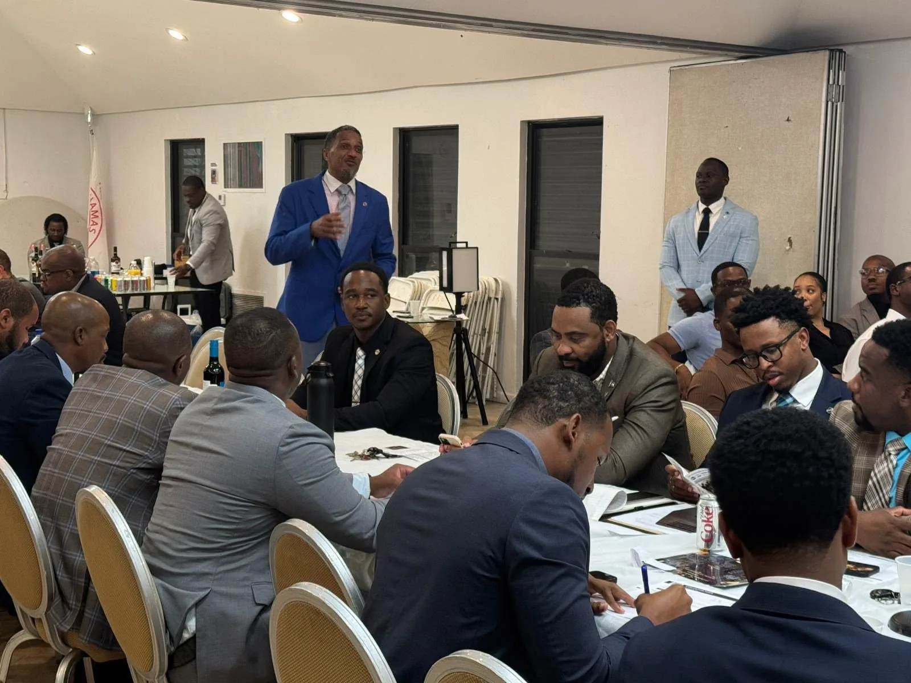

MEMBERS + GALLERYThe people.
The people.
The moments.
Member stories, meeting photographs, recognition and the visual history of Club 1600 in one place.
EXPLORE CLUB 1600More than a
More than a
photo wall.
Move from the people to the room, then into the archive. Member profiles can grow here as real stories and photographs are collected.

MEMBER HIGHLIGHTS
Meet the Members of 1600.
Profiles, photographs and member write-ups as they are published.
Explore member stories →
CLUB GALLERY
See the room in motion.
Meetings, leadership, service, contests and fellowship.
Browse photographs ↓
PAST PRESIDENTS
The presidential archive.
Follow the leadership lineage from 1969 to today.
Explore The 62 →
RECOGNITION
Standards worth recording.
Club achievements, recognition and milestones.
View recognition →
This is a living Club 1600 archive. New photographs can be tagged by year, event and category, while member highlights can link to full profiles and write-ups as they are published.